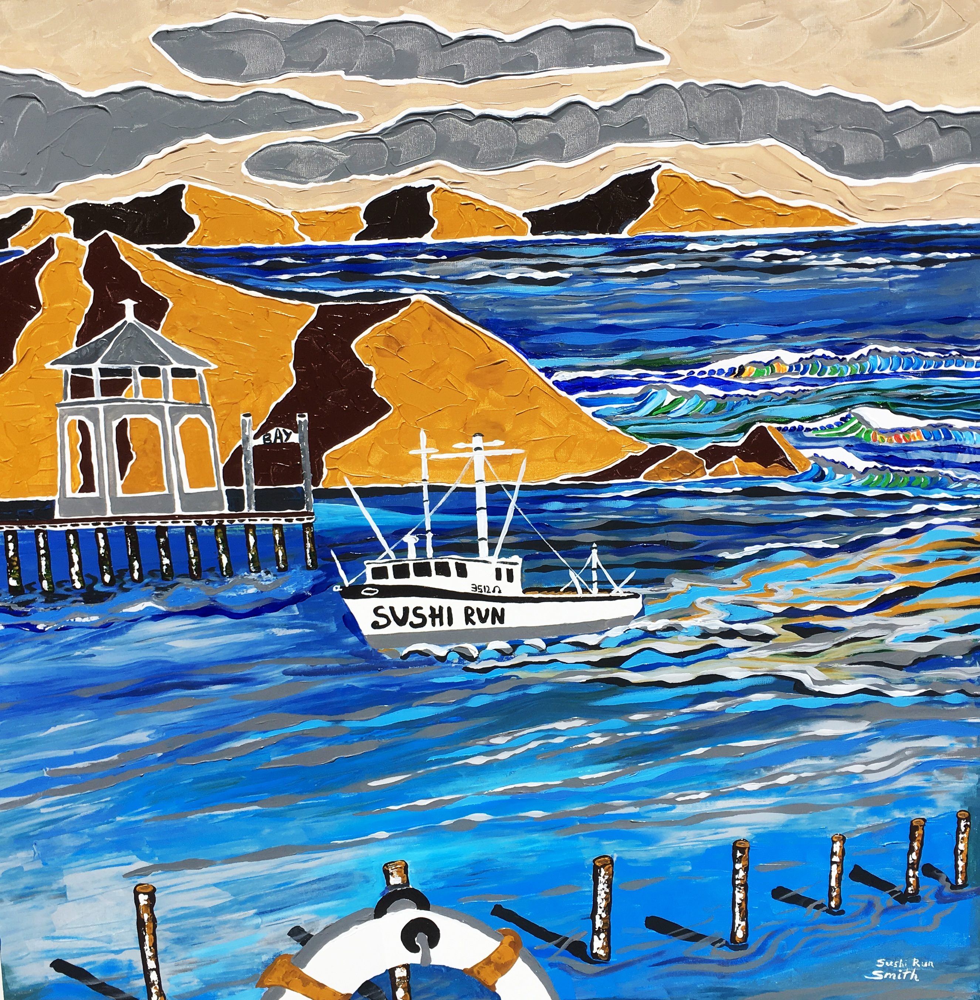

Mark Smith has his art studio gallery in North Logan, Utah. Mark was encouraged by his fifth grade teacher, Mr. Jorgensen to build on his art talent of drawing the world around him. Soon he longed for color, which led him to his love of water colors. Inspired by the art work he admired in Park City Galleries in 2017 he launched his eye for color in his new medium of late acrylics. The raw intensity of the acrylics was the catalyst to launch his abstract contemporary vision for artwork. His trade mark, white line work, continued from water colors to acrylics. He thinks white should be the color of the year every year. He says white allows the mind to enjoy every other color in life without
feeling like one has stepped in mud. Retiring from the field of education where Mark was an elementary teacher for 32 years, he now devotes his time on the passion he feels for expressing his own vision of artwork. Kids artwork influenced his eye to paint with bold colors, and keep the subject matter simple. He has established a style that is easily recognized, and was awarded the "People's Choice Award in the art show Summerfest 2018. He is a member of the Utah Water Color Society and loves building on his talent by learning from other masters in the field through workshops. He remains ever vigilant about observing his world around him where he notes," It is full of color!"
View Gallery